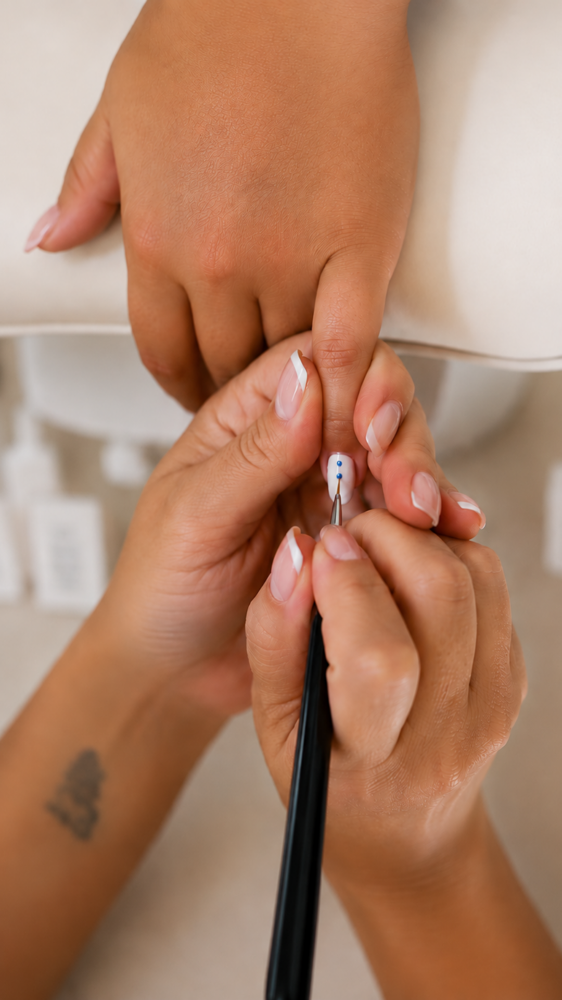
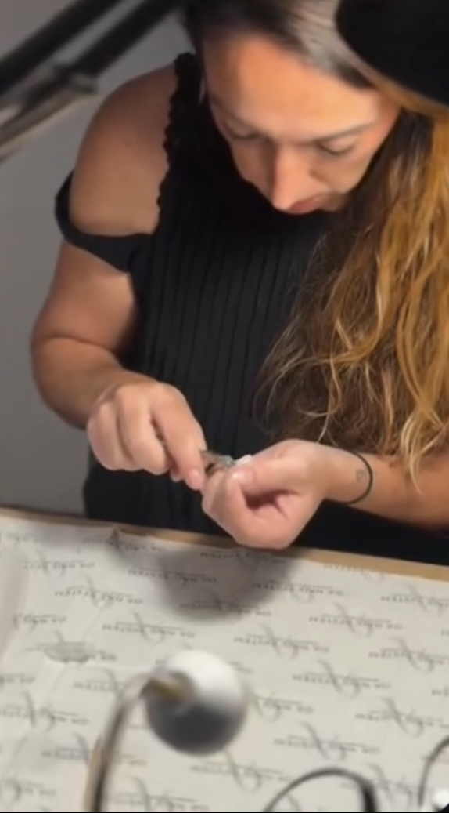

Je m’appelle
Aloïs.
Depuis toujours, je suis sensible à l’art, aux couleurs, aux matières et à tout ce qui permet d’exprimer une personnalité avec subtilité. J’ai d’ailleurs étudié l’art, bien avant que l’univers de la beauté ne devienne le fil conducteur de ma vie professionnelle.
Pendant plus de vingt ans, j’ai exercé dans la coiffure. Vingt années passées auprès des femmes, à les écouter, les conseiller et à comprendre que la beauté ne se résume jamais à une technique ou à une tendance.
Elle est profondément personnelle.
Au fil des années, j’ai appris à observer les détails, à chercher l’équilibre et surtout à adapter mon travail à chaque femme plutôt que de reproduire simplement un modèle.
L’onglerie, une nouvelle expression
Aujourd’hui, l’onglerie est devenue une nouvelle façon d’exprimer cette passion. J’y retrouve ce que j’aime depuis toujours : la précision du geste, le travail des couleurs et des formes, la créativité, mais aussi ce moment privilégié qui se crée autour d’un rendez-vous beauté.
C’est de cette envie qu’est né Nallys Nails.

Continuer à apprendre,
toujours.
J’ai notamment suivi une formation auprès d’Emma, au centre de formation Efab Nails. J’aime continuer à me former, découvrir de nouvelles techniques et affiner mes gestes pour faire évoluer l’univers Nallys.

Un univers pensé pour vous
J’ai imaginé Nallys comme un univers féminin, élégant et chaleureux, où chaque rendez-vous est pensé comme une parenthèse. Un moment pour ralentir, prendre soin de soi, échanger, être conseillée et repartir avec des ongles qui vous ressemblent vraiment.
Je n’aime pas l’idée d’imposer un style. J’aime découvrir le vôtre.
Une manucure naturelle et délicate, un rouge intemporel, une French élégante ou une création plus affirmée : mon rôle est de vous écouter, de vous conseiller et de trouver ensemble ce petit détail qui fera toute la différence.
Parce qu’après plus de vingt ans dans l’univers de la beauté, il y a une chose dont je suis certaine : les plus beaux résultats sont ceux dans lesquels on se reconnaît.
Prendre rendez-vous →